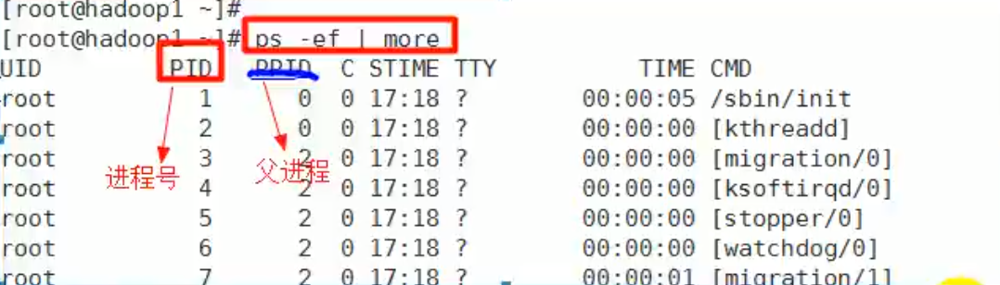

进程管理
1. 进程管理基础
- 在Linux中，每个执行的程序（代码）都称为一个进程。每个进程都分配一个ID号
- 每一个进程，都会对应一个父进程，而这个父进程可以复制多个子进程。例如www服务器。
- 每个进程都可能以两种方式存在。前台和后台。
- 前台进程：用户目前的屏幕上可以进行操作的。
- 后台进程：实际在操作，但由于屏幕上无法看到的进程，通常使用后台方式执行。
- 一般系统的服务都是以后台进程的方式存在，而且都会常驻在系统中，直到关机才结束。
2. 显示系统执行的进程
2.1 ps指令详细介绍
ps [选项]：查看目前系统中，有哪些正在执行，以及它们执行的状况
- ps -a：显示当前终端的所有进程信息。
- ps -u：以用户的格式显示进程信息。
- ps -x：显示后台进程运行的参数。
- ps -axu | grep xxx：过滤得到xxx的信息。
- ps -ef：以全格式显示当前所有的进程，查看进程的父进程。
- -e：显示所有进程。
- -f：全格式。
ps -axu显示信息选项

System V 展示风格
| 字段 | 说明 |
|---|---|
| USER | 用户说明 |
| PID | 进程识别号 |
| %CPU | 进程占用cpu百分比 |
| %MEM | 进程占用物理内存百分比 |
| VSZ | 进程占用虚拟内存大小(KB) |
| RSS | 进程占用物理内存大小(KB) |
| TTY | 终端机号 |
| STAT | 进程状态，S睡眠，s代表是会话的先导进程，N代表进程拥有比普通进程更高的优先级，R正在运行，D短期等待，Z僵死进程，T被跟踪或被停止 |
| STARTED | 进程启动的时间 |
| TIME | 此进程所消耗的CPU时间 |
| COMMAND | 正在执行的命令或进程名 |
ps -ef显示信息解释

BSD展示风格
| 字段 | 说明 |
|---|---|
| UID | 用户id |
| PID | 进程id |
| PPID | 父进程 |
| C | CPU用于执行优先级的因子，数值越大，表明cpu密集型运算，执行优先级会降低，数值越小，表明是I/O密集运算，执行优先级会提高 |
| STIME | 进程启动时间 |
| TTY | 终端机号 |
| TIME | 此进程所消耗的CPU时间 |
| CMD | 启动所用的命令和参数 |
3. 终止进程
若是某个进程执行一半需要停止时，或是消耗了很大的系统资源时，此时可以考虑停止该进程，使用kill命令来完成此任务
- kill [选项] 进程号：通过进程号杀死进程
- -9：表示强迫进程立刻停止
- killall 进程名称：通过进程名称杀死进程，也支持通配符，这在系统因负载过大而变得很慢时很有用
案例1：踢掉某个非法用户

案例2：终止远程服务

案例3：终止多个gedit编辑器

案例4： 强制沙雕一个终端

4. 查看进程树
- 查看进程树：pstree [选项]
- -p：显示进程的PID
- -u：显示进程的所属用户
5. 服务(Service)管理
服务(Service)本质就是进程，但是是运行在后台的，通常都会监听某个端口，等待其它程序的请求，比如(mysql,sshd 防火墙等),因此我们又称为守护进程。

5.1 service管理指令
service管理指令：service 服务名 [start | stop | restart | reload | status] 在CentOS7.0之后，不再使用service，而是systemctl
- 查看防火墙情况：
- service iptables status
-
systemctl status firewalld（7.0之后的版本）

-
测试某个端口是否在监听：telnet
5.2 服务查看方式
- 方式1：setup指令

- 方式2：ls -l /etc/init.d/
5.3 服务的运行级别（runlevel）
- 查看或修改默认级别：vim /etc/inittab
- 每个服务对应的每个运行级别都可以设置 详细见3.5实用指令第一部分
5.4 开机流程

5.5 chkconfig指令
chkconfig：可以给每个服务的各个运行级别设置自启动/关闭
5.5.1 基本语法
- 查看xxx服务：chkconfig –list | grep xxx
- 查看服务的状态：chkconfig 服务名 --list
- 给服务的运行级别设置自启动：chkconfig –level 5 服务名 on/off
- 要所有运行级别关闭或开启：chkconfig 服务名 on/off
- chkconfig重新设置后需要重新启动才能生效
6. 动态监控进程
top与ps相似，都是用来显示正在执行的进程，top的不同之处在于top执行一段时间可以更新正在运行的进程
6.1 基本语法
top [选项]
- -d 秒数：指定top命令每隔几秒更新。默认是3秒。
- -i：使top不显示任何闲置或者僵死进程。
- -p：通过指定监控进程ID来仅仅监控某个进程的状态。
- 交互操作说明：
| 操作 | 功能 |
|---|---|
| P | 以CPU使用率排序，默认就是此项 |
| M | 以内存的使用率排序 |
| N | 以PID排序 |
| q | 退出top |
动态进程监控图例

6.2 应用案例
6.2.1 监控特定用户
- top查看进程；
- u
- 输入用户名。
6.2.2 终止指定的进程
- top查看进程；
- k输入要结束的进程。
7. 查看网络情况
7.1 基本语法
netstat [选项]
- -an：按一定顺序排列输出
- -p：显示哪个进程在调用
7.2 应用案例
-
查看所有的网络服务
- netstat -anp | more
-
查看sshd的服务的信息
- netstat -anp | grep sshd